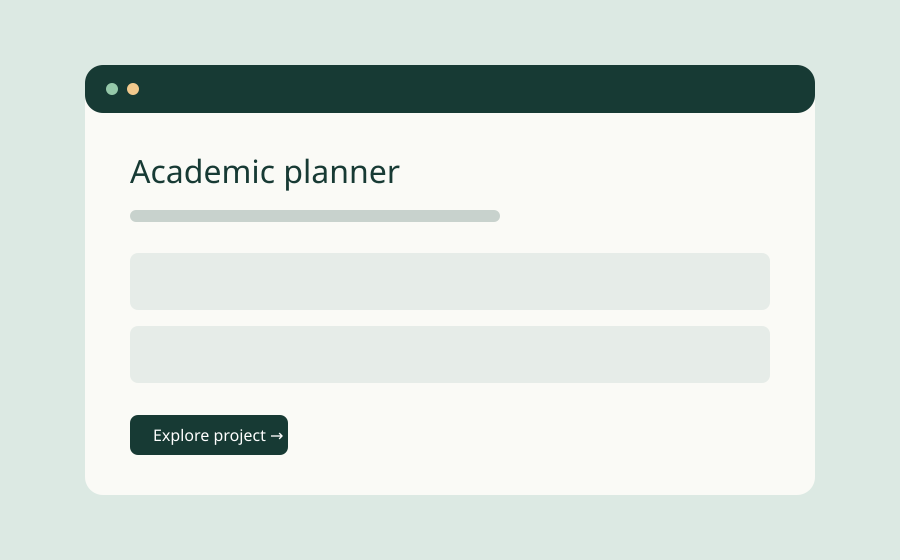
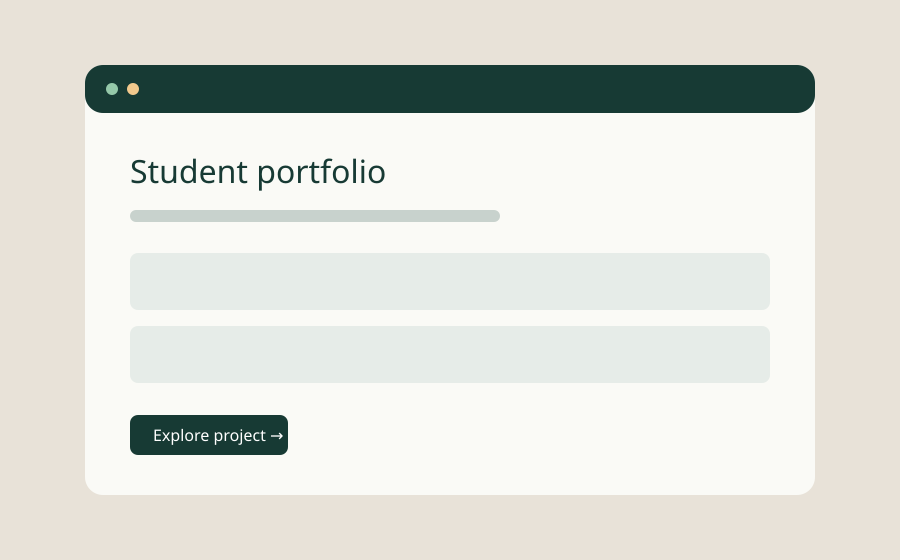
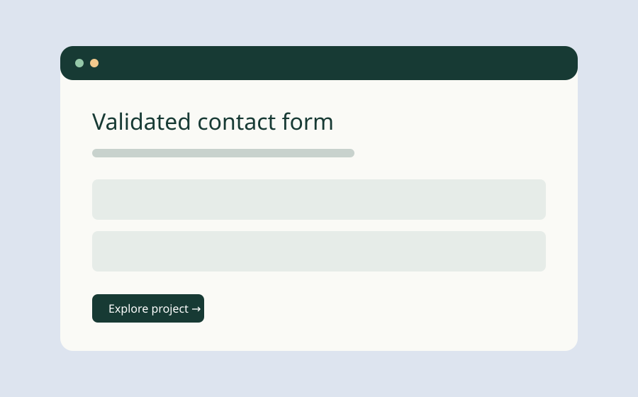

PROJECT 01
Academic planner
A practical task manager for assignments and study sessions. Add tasks, complete them, filter your list, and keep progress between visits.
HTML · CSS · JavaScript
Try the planner ↗IDEAS INTO PRACTICE
Three working sample projects from this academic website. Each one explores a different part of the web development process.

PROJECT 01
A practical task manager for assignments and study sessions. Add tasks, complete them, filter your list, and keep progress between visits.
HTML · CSS · JavaScript
Try the planner ↗
PROJECT 02
A responsive, five-page portfolio that connects personal background, project work, academic planning, and contact information.
Semantic HTML · CSS Grid · Accessibility
Explore the portfolio ↗
PROJECT 03
A client-side form that checks required fields, email formatting, and a digits-only phone number before preparing an email draft.
Forms · DOM events · Validation
Try the contact form ↗